Applications are now closed.
Download the First Info as a PDF here.
Download the application poster here.
The International Astronomical Youth Camp (IAYC) is a three-week long summer camp aiming to promote knowledge of astronomy and related sciences in a unique international atmosphere. It is run by an international team of students and young scientists and organised by the International Workshop for Astronomy e.V..
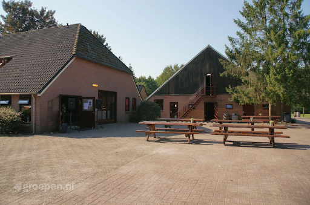
More detailed information about the IAYC in general, participants, the daily schedule and observing during the IAYC can be found in the About the IAYC section. We strongly recommend all prospective participants read this section as well as this First Info carefully!
About the IAYC 2025
The IAYC will be held in the Netherlands for the first time in 50 years! The location will be at de Klonie, in the northeast province of Drenthe. The house is 30 km from the border of Germany and located in the hamlet of Ellertshaar.
The camphouse itself is a group accommodation, designed for hosting large events and camps. It consists of four large bedrooms (20-36 beds), as well as a few smaller rooms (2-8 beds). In addition, there are several spaces available for various working groups and free-time activities, and a host of common rooms for socialising.
The house has plenty of space for many outdoor activities, including a volleyball court, basketball court, football field, a pingpong table and a campfire site. In addition the campsite has a private beach next to the lake of Vossenmeer, suitable for swimming. The area is beautiful for hiking and has a lot of small ponds and creeks. Within 300 m of the camphouse there is a horse farm for horse riding!
Dates: 1st - 21st August (Camp runs from Friday evening to Thursday
morning)
Camphouse: De Klonie - Ellertshaar
Address: Ellertsweg 4, 9535 TA Ellertshaar, Netherlands
Latitude: 52° 53’ 33” N
Longitude: 6° 44’ 15” E
Altitude: 18 m
Bortle scale: 4
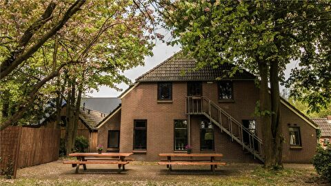
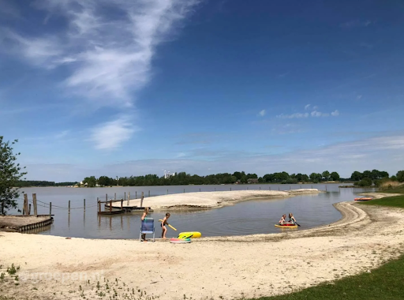
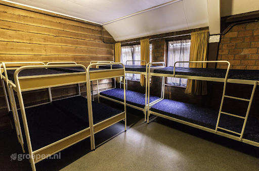
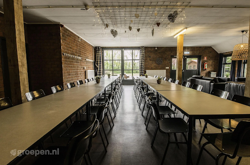
A few facts about The Netherlands
Area: 41850 km²
Population: ~18 Million (2022)
Capital: Amsterdam
Major Cities: Rotterdam, Utrecht, Den Haag
Official Language: Dutch
Currency: Euro (EUR) €
International dialing code: +31 / 0031
Travelling in Europe in general, and in the Netherlands in particular, is very safe. More than 90% of the Dutch population are fluent in English, so communicating with the locals will not pose a problem.
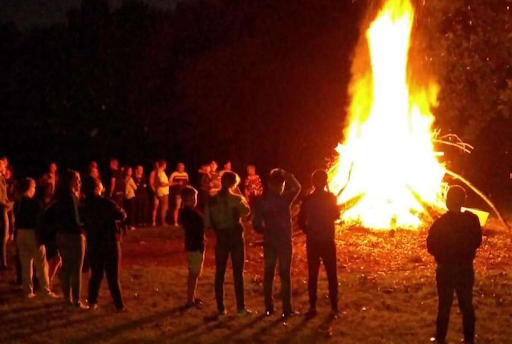
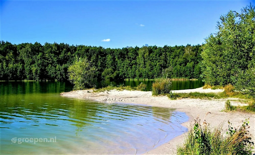
Observing
We will use the large pasture next to the camphouse as our observation field. Ellertshaar is located in a region of several natural reserves and has one of the lowest light pollution levels in the Netherlands! Observing takes place during working group sessions as part of your project, or after midnight when the telescopes are available for everyone. Catch a glimpse of a celestial object through a telescope or lie down in your sleeping bag and enjoy the view! Don’t worry if you’ve never observed before, the leaders and other participants are always happy to show you how it’s done and offer support. Everyone has the chance to learn how to use a telescope.
Last but not least, we’ll also have a Dark Room. This means you’ll have the opportunity to take film pictures and learn to develop them yourself. You’re also welcome to bring your own telescope or binoculars. Take a look at our equipment list to see a list of the telescopes and CCD cameras we have available.
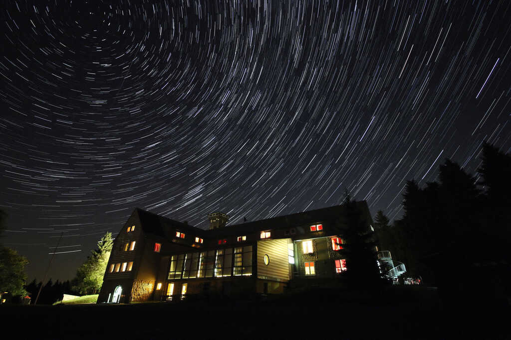
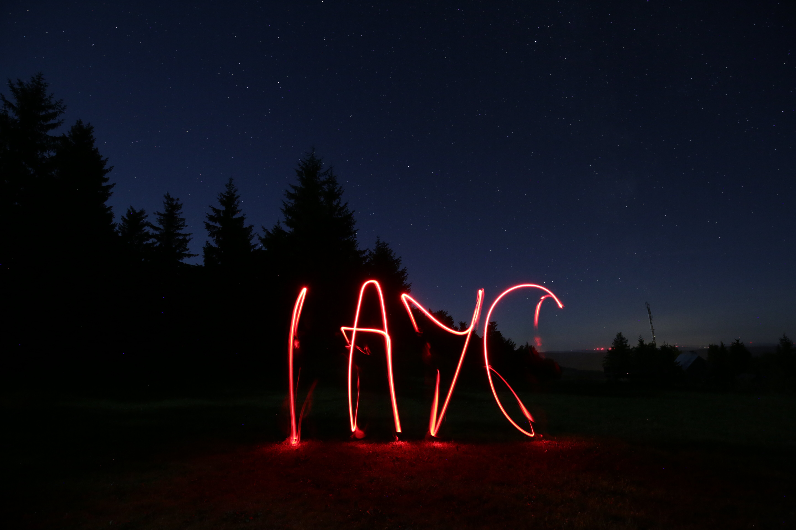

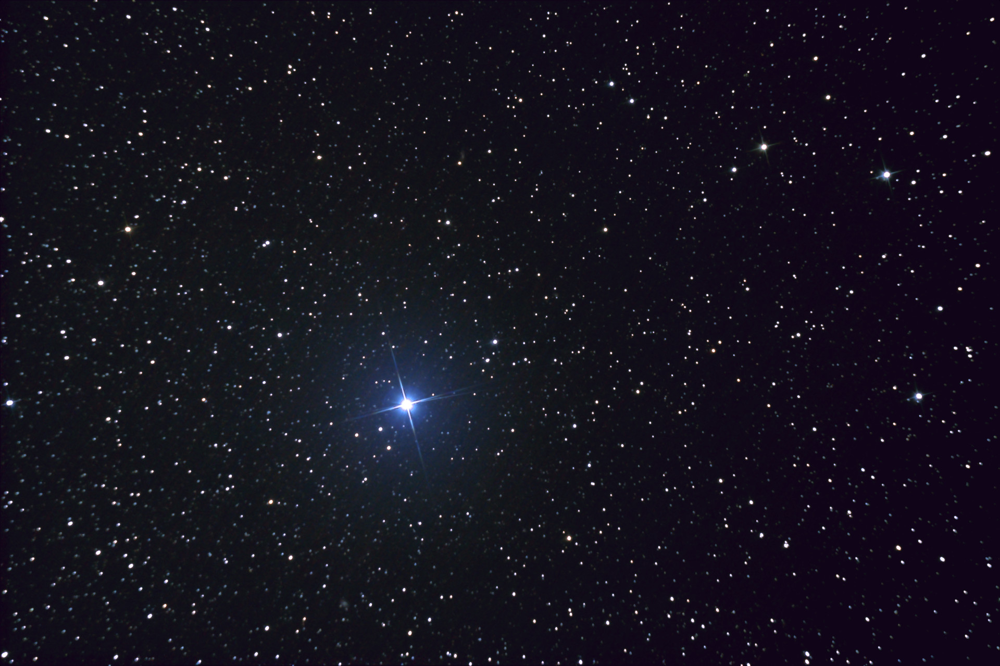
Participation
To participate in the IAYC you must be 16 to 24 years old (16 and 24 included) at the start of camp.
The participation fee is 1130 EUR and the application deadline is 9th of March 2025. Applicants will receive an outcome by the end of April. If accepted, you will need to transfer 350 EUR within seven days, and the remainder of the fee within the following 14 days. The participation fee is therefore fully paid at most 21 days after your notification of acceptance. Letters of support for visas will only be supplied after the participation fee is paid in full.
You can withdraw your application at any time before we receive the participation fee. After that, we will refund you minus an administration fee of 50 EUR if you drop out before the 1st of July, and 100 EUR afterwards. Since the accommodation is paid for ahead of time, we will be unable to refund dropouts (including visa rejections) if we are unable to find a replacement by the beginning of the camp.
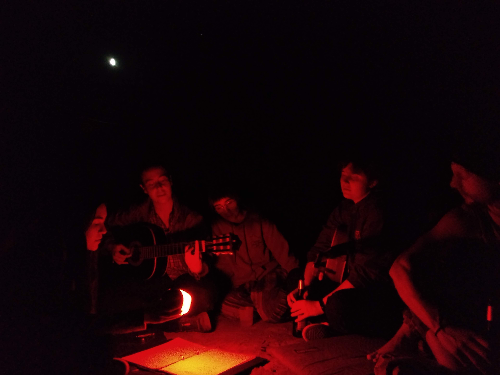
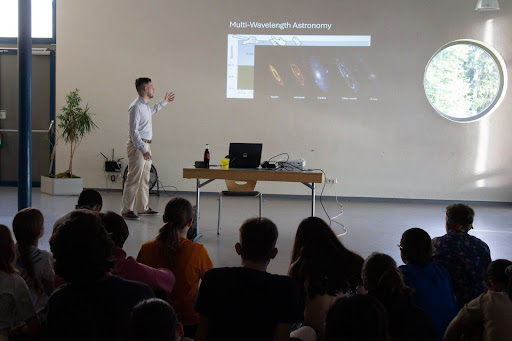
Grants
If financial reasons are keeping you from applying, we encourage you to seek support from our (limited) grant programme. Our grant program can cover up to 1080 euros of the participation fee. Note this means you must still cover other expenses such as cost of travel to and from the camp by other means. You can fill out the grant form as part of the regular online application process.
This year we are able to offer three different types of grants:
- The usual IAYC grants. This is open to anyone from any background and nationality and available to both new and previous participants.
- The Wilhelm and Else Heraeus (WE-H) Foundation grants. This is open to German
citizens and/or residents (for example if you are a foreign student living in
Germany, or a German studying abroad), as well as new and previous
participants. We may ask for proof that you fulfil the eligibility
requirements.

- The Zaklada MIOC Alumni grant. Open to students at the XVth Gymnasium in Zagreb, Croatia. This is a fully funded grant.
If you are interested in applying for one of the above grants, please complete the additional grant section on your online application. As part of the grant application you will need to send in a 2-3 min long video introducing yourself, your motivation to join IAYC and why you require a grant. Please send your video to info@iayc.org via the cloud service wetransfer.com with the title “Grant video [Your Name]”. If accepted, you will also be required to write a 1-page report after the camp outlining your personal impressions, and lessons and skills learned from attending the camp. This will be anonymised (if you wish) and shared with the organisation which funded you.
To improve your chances of receiving funding, you should try to find support from other organisations like the Royal Astronomical Society, European Physical Society or charitable agencies (e.g. Polish Children’s Fund, Swedish Astronomical Youth Association) that support young people doing research. Your school, university or workplace may also fund extra-curricular activities. If you can think of other ways or organisations that could support you, please try to explore them, as unfortunately our grant program is limited and we are unable to fund everyone.
If you have questions about the grant programs, please contact info@iayc.org.
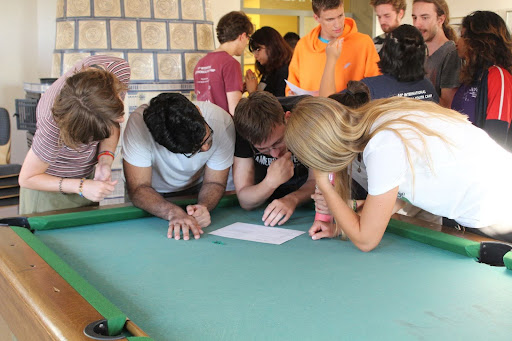

Diversity
We are dedicated to making the camp accessible to all, and especially welcome applications from those belonging to minority groups. If you require time away from the schedule for prayers, or if you have any questions about accessibility or dietary concerns, please do not hesitate to get in touch via info@iayc.org. You can read more on our policy on diversity here.
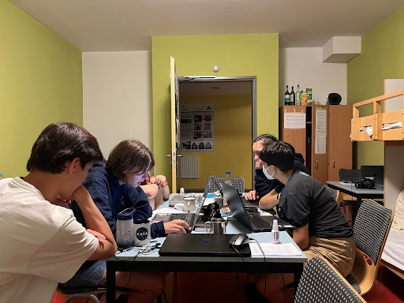
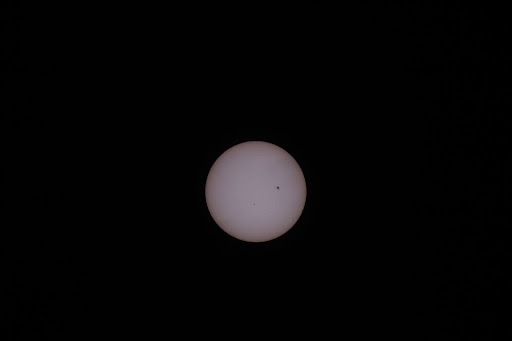

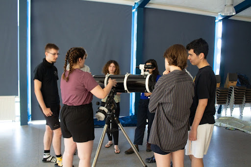
Choosing your Working Group
In the following section you can find the abstracts of the eight working groups offered at the IAYC 2025. On the application form you will need to indicate which working groups you want to participate in. The NAP, GEN and Info will also introduce themselves.
BRAT SUMMER 2 - Big-data Research And Telescopes: Studying the Universe with Modern Machine lEaRning of 2day
Tags: machine learning, image processing, observational, data pipelines, programming
I’m everywhere, I’m so big data, ah ah a-a-ah
Every day, observational instruments worldwide collect petabytes of data imaging the night sky, and that number is only increasing as our tools become more powerful. With so much raw information to handle, how do we process it all? How do we study such massive sources? What do the astronomical discoveries of today look like compared to when we lived in a small-data world? And how do we know where to look for them in a data landscape denser than a crowd in a boiler room?
You wanna guess the color of this galaxy, you wanna know what’s its exact velocity
In BRAT SUMMER 2, we will learn about the exciting modernities of observation and astronomy that have developed in the data-driven age. You can implement the machine learning algorithms that help detect anomalies hidden in giant datasets, identify element fingerprints in stars, or predict redshifts of supernovae. Try your hand at astrophotography and sharpen your own images by building a deconvolution pipeline to uncover subtle features in a celestial object’s structure. Maybe you’ll mine and analyse major sky surveys for the astronomical objects of your choice, using open-source tools for big data. Much like SOPHIE making her beats, we’ll see the extent of what computers can do for us in the modern era.
I know its composition right to the core, from the stellar spectra passed through all the pipelines before
Zooey

Let’s goooo! Zooey is officially here! This tech queen is taking a break from slaying in Silicon Valley to make her debut as a leader this year. She brings energy and enthusiasm wherever she goes, so whether you want to chat about the latest technological developments, discuss Vietnamese food, or exchange skincare tips, Zooey is an expert in yapping! Having been around at IAYC since 2018, she brings a wealth of experience and passion, so make sure you take the time to share a conversation or a bowl of pho with her, and get to know this lovely leader more!
HAGGIS - Hunting and Analysing Growing Galaxies In Simulations
Tags: galaxy formation, programming, simulation theoretical, cosmology
“Space is big. Really big. You just won’t believe how vastly, hugely, mind-bogglingly big it is.”
Space is so big in fact that it’s incredibly difficult to observe on the largest scales. So how do we have any sense of what the biggest objects in our universe look like? And how can we possibly tell how they formed in the first place?
This is where the wonderful world of simulations comes in! Simulations allow us to recreate and investigate structures in our universe like galaxies and see how they were formed, as well as predict what might happen to them in the future. In HAGGIS, we’ll be exploring what goes into making a cosmological simulation, what kind of results they can produce, and what we can learn from this. There will be a range of projects on offer for all types of interest and experience. Want to get hands-on using real research code to see how simulations run? Wondering how galaxies even form in the first place and how we learn about that? Maybe you want to get your hands on some results and discover how we can make predictions with them? Or maybe you want to throw out the rule book entirely and try and build your own brand new simulation code? Whatever area you’re interested in exploring, HAGGIS has a project for you!
Whether you’re brand new to simulations or you’re ready to further your skills, I’ll be there to guide you through with lots of books, snacks, and moral support. So bring your enthusiasm, grab your rubber ducks, and I’ll bring a good helping of snacks, and let’s build some galaxies!
Sarah

Misty mountains. Bagpipes. High-intensity rhythmic cardio. Sarah is on the horizon and we’re dancing like it’s the Scottish highlands! This IAYC veteran has turned leader. No sweat for someone getting a PhD in GPU computing and alternative dark matter models while simultaneously building entire theatre sets in a week. Come to Sarah for hilarious storytelling, musical discussion, her advice on wrangling misbehaving Python code. Like the warm coat of a HAGGIS, Sarah’s got you covered!
LUCKY - teLescopes, fUn and a Clear sKY
Tags: astronomy, observing, photography, data analysis
For centuries, astronomers have looked up at the skies, staying awake for long hours, trying to decipher the secrets locked among the celestial bodies moving above their heads. However, one crucial element for fruitful astronomy research is out of the control of any dedicated scientist: the weather.
But, don’t fear! In LUCKY we want to maximize our chances of accomplishing successful observing projects. That’s why we won’t limit our observations to the night time! In this working group we will focus our thirst for knowledge on our two biggest companions in the sky: the Sun and the Moon. Have you ever wanted to take nice pictures of the Moon and study its craters? Or look closely at the Sun without going blind and find out what is going on during a period of maximum activity? If you’d love to step into the shoes of great astronomers like Galileo or Tycho Brahe and replicate their work with the aid of modern technology, this is the group for you!
It doesn’t matter if you’ve never observed or you like to take out your telescope every night, everyone is welcome to join! We’ll learn from each other, analyze our data, and get frustrated together during cloudy days. I’ll bring cool projects, telescopes and cameras, but bringing your own devices and ideas is encouraged!
Don’t hesitate to get in touch if you have any questions or want to share your excitement, come join us in The Netherlands!
Maria

This lovely and cheerful person is María, and you’ll recognize her by how she lights up a room ! She is returning to IAYC for the fourth time this year after attending in 2022, 2023, and 2024, and this will be her second year as a leader (she’s got this whole thing down). María is studying astrophysics in Uppsala after completing her degree at USC in Spain, and has much to share! Don’t hesitate to ask her about the Swedish custom of fika, about her latest crocheting projects, or about what she’s currently reading: with María, you’re guaranteed to have great conversations and a good laugh!
SPARTA - Signal Processing, Antennas and Radio TrAnsceivers
Tags: engineering, physics, DIY, practical, theoretical, programming
Our modern civilization is built on communication technologies. They hold together economies, accelerate research endeavours and enable us to connect with people from all across the world. Each minute, more than 10 000 terabytes of data flow through undersea cables, communication satellites and wireless networks. So how did we get here? And how can we keep up with our ever-growing need for communication?
In SPARTA we will try to answer these questions from a technical perspective: Maybe you want to come up with a data compression scheme or investigate how we deal with errors in our messages? Or how about intercepting the communications of a NOAA weather satellite to get satellite images and weather data from an object orbiting 800 km above our heads? You could also learn about soldering and build a morse transceiver or a little tabletop radio!
No matter your expertise and background, I can guarantee that there will be an exciting project in SPARTA that fits you. So let’s strike a deal: You bring your enthusiasm for science and technology and I’ll bring coffee and tea to fuel our heroic quest for knowledge!
Joris

Here lands Joris! The wonderful polymath oldies already know and love! Joris is joining the leader team for the first time and we couldn’t be more excited about having him. This German physicist, soon to finish his bachelor’s degree at Heidelberg University, is both kind and unimaginably clever. He can hold endless interesting conversations about almost any topic you can imagine, and will always be there to support you in your work and extra-curricular endeavours. Be it through physics, sci-fi, biochemistry, or metal, make sure to engage with this wonderful human being at camp!
STORYTIME - STars On the Radiant skY Truly Inspired Mythology on Earth
Tags: cultural astronomy, mythology, archaeoastronomy, history, sociology
Have you ever gazed at the night sky and felt your heart skip a beat in amazement? Or imagined your own constellations and stories about them?
Imagine our ancestors hundreds and thousands of years ago looking up at the same stars and the awe they must have felt. They weaved the night sky into stories about their gods and built temples according to the path of the Sun or the Moon. Celestial objects are the center of countless myths and legends of creation, but they also played a more practical role in the history of humankind, be it in navigation or tracking the seasons with calendars.
In STORYTIME, we’ll explore the relationship between astronomy and culture throughout history. From ancient Greek mythology which many of you might be familiar with, to stories of Aboriginal Australians (ever heard of the Big Emu?) and Inca legends, we will dive into different civilizations from around the world.
Get ready to travel through time to the dawn of astronomy, with artefacts such as the Nebra sky disk, the oldest concrete depiction of the night sky, and structures like Stonehenge. We will also explore how people used the stars to find their way through a strange world. Who knows, maybe you will even get the chance to reconstruct ancient navigational instruments on your own?
I promise you that we’ll spend hours underneath the stars, discussing stories and eating cookies. I will do my best to make sure you have a great time at the IAYC. Can’t wait to finally get to know you all in August!
Wanda

After two fantastic years as our GEN, Wanda is coming back for the fifth time as a leader! They’re one of the most genuine people you’ll meet at camp, sweet and down to earth. You can ask her about her Master in Global Change Ecology, or her degrees in biology and physics. Or about their slackline, their passion for heavy metal, or even their semester abroad in Nigeria! Full of interesting hobbies, stories and thoughts, her wisdom and knowledge are always guaranteed to make for an unforgettable conversation!
YAPTOPIA - Young Academics Promoting Trust: cOllimating Philosophy with scIence and Astronomy
Tags: social, theoretical, philosophy, psychology, astronomy
‘Our planet is a lonely speck in the great enveloping cosmic dark.’ - Carl Sagan
We’re constantly surrounded by fake news and unfounded statements. When empirical evidence and the scientific method are no longer trusted, how should we, as scientists, safeguard them? In YAPTOPIA, we’ll understand the conceptual and practical underpinnings of credibility in scientific findings, and how to make them within reach of everyone. In short, we’ll ask ourselves, why trust science?
But this analysis becomes sterile if we ignore how our individualities deal with these concepts. What does it mean for you to know that you live in this pale blue dot? Do you feel scared or filled with wonder, when faced with fascinating and enormous concepts like the Big Bang, wormholes, parallel universes, quantum mechanics and the triple whopper?
But wait, you may ask, when are we going to yap, if we have to think all the time? ‘This is where the fun begins.’ It’s the collective character of science that makes it so beautiful and incisive. This is why the heart of YAPTOPIA will be open discussions. You’ll be divided into subgroups, and after researching your topics, you’ll all bring to the table what you’ve learnt and what you think. We’ll discuss and keep notes of our thoughts, with mugs in our hands and yummy snacks by our side. You’ll discover, or appreciate even more, how refreshing and stimulating it is to discuss ideas and emotions with other human beings.
So, what are you waiting for? Sail with me and dive into the YAPTOPIA!
Francesco

Let me introduce: Francesco! With the brightest smile and warmest hug this lovely Italian will make your day. He first appeared on the IAYC stage in 2018 and quickly gained fame for his shenanigans. Now he is back as a second time leader and graduate in biomedical engineering, more precisely e-health. Aside from that, Chicco is also a Lord of the Rings and LEGO enthusiast (ask him about his collection) and has a great sense of humour. He is one of the kindest and most caring people I know and you can have great conversations with him, so don’t miss out!
YEARN - quantifYing the ExpAnsion of the univeRse with distaNt objects
Tags: data analysis, cosmology, programming, theoretical
Have you ever pondered the mind-blowing vastness of the universe? Have you ever gotten dizzy during the mental exercise of pushing your awareness to the outermost reaches of space, deep into the past? Do you YEARN for the void? Well, look no further!
In YEARN, we will use a mix of theoretical notions in the realm of cosmology, data analysis, and programming to study the large-scale expansion of the universe. Using data sets of both nearby and distant objects, we will aim to represent this expansion numerically. Then again, how do we even know the universe is expanding? Don’t just take my word for it - prepare to read and plot your hearts out! By analyzing different levels of redshifted spectra, we will travel as far as the absurdly distant quasars in order to quantify and compute the rate at which everything is moving away from us. Additionally, with some cheeky maths, we will attempt to understand both how it all began and what the end of the universe might look like (spoilers).
Whether you’re new to these (profoundly cool) concepts and numerical tools or already quite comfortable with them, YEARN will offer you adaptable projects to satisfy your curiosity about what the heck is going on out there (and if you have your own ideas we can definitely explore them together).
Bring a mug and your inquisitiveness, and I’ll meet you halfway with snacks, funky playlists, and as much support as you’ll need during your journey through deep space!
Dara

Dara has been part of the IAYC family since 2019 and for the first time they are coming back as a leader! The coolest person of the camp is not only studying Physics in Lausanne, but also working as a bartender. During the three weeks of IAYC you can usually find her enjoying some floor time, chill talks under the stars or reading tarot cards. Invite them to a game of Monopoly or discuss how roller skates are much better than inline skates, and you’ll have guaranteed laughs for hours!
NAP - Non-Astronomical Program
By now you must have read of all the wonderful working groups we have at the IAYC! After a long day of working on these exciting projects, you would of course need a nap. But at the IAYC we don’t just nap… we NAP!
At 7:30 pm all the horses, birds and flying saucers within reach of Ellertshaar will start to hear peculiar noises. From whispering, to singing, to silly noises, to screaming from the top of your lungs! And many, many laughs!
NAP is the camp’s Non-Astronomical Program! These daily sessions will be to get to know each other better, and to get away from the project code that is fuelling your imposter syndrome. We will be playing games, have lots of fun and bond as a group. And over the course of the camp, we will share our interests with performance evenings, our cultures with national evenings (bring traditional clothing and snacks if you can!) and our languages with poetry-evenings!
Next to being the GEN’s right hand man, as NAP I will be in charge of camps non-academic activities. Aside from the daily NAP, you can expect me to organise your competitions, presentations and workshops into our schedule. Is your particle detector, morse transceiver or colleague not working? I will bring sticky tape and cookies. And I will try to trigger your wild side, spark the craziness in you and create some beautiful chaos that will make this camp an unforgettable experience!
So bring your eye masks and your isomats, come with me, and get ready for a NAP!
Andrés

Meet Andrés! This Bolivian particle physicist is returning to camp in his third year as a leader. Besides being a brilliant physicist, he conducts orchestras and is a huge Lord of the Rings nerd! On top of that, he is also an amazing speaker so you certainly don’t want to miss out on his talks on classical music or fundamental physics! With a contagious smile, a physics PhD and a tremendous talent for explaining things, every conversation with him will leave you feeling enlightened!
GEN - General Coordinator
So you’re wondering what the General Coordinator of the IAYC does, right? It’s easy to miss how much work goes on behind the scenes to make sure camp runs smoothly and everyone has a great time.
As the GEN it’s my job to make sure everything is working right from start to finish. You need hot food and all the tea and coffee you can lay your hands on when we get up at midday? I’ll be constantly keeping up with the staff of the house to keep us fed and watered. You can’t fit enough clothes for 3 weeks of camp into your suitcase (for some reason)? I’ll see to it that we can do at least some laundry during the camp, just don’t count on weekly washes.
Aside from the day to day running of the camp it’s also my job to handle any problems that come up. Water not running, the heating/cooling is broken, your leader is missing/sick, and anything else you can think of. It’s up to me to deal with issues as they arise so that you don’t have to, and find solutions that keep things feeling seamless and smooth.
During camp, you can come talk to me about anything, whether it‘s about your project not working, FOMO taking over or the fact that you haven‘t slept in 3 days because you stayed up observing all night – I‘m here for you. (But beware: if the last one applies, I will force you to go to bed!)
Marko

We’re no strangers to Marko! This Czech Spaniard has been with us since 2016, and this will be his third one as a leader! This engineer is incredibly kind, quick-witted and has a great sense of humour. In addition he is a polyglot, meaning he can listen to any concerns you may have in languages you have never even heard of. So have full faith in our GEN, we certainly do! This man is never gonna give you up, never gonna let you down. He is never gonna run around and desert you!
Your application for the IAYC 2025
The Deadline for applications is 9th March 2025, 23:59 CEST.
If you want to participate in the IAYC 2025, complete the application form on our website. Please read the instructions carefully. We will also require from you, or your legal guardian if you are not yet 18 (21 in some countries), to sign a consent form to download when finalising your application. Please do not forget to send us the consent form via email; without it your application is invalid!
Make sure you read the section “Participation” carefully and have a look at our data protection agreement. Please note that you are obliged to have health insurance which is valid in the Netherlands for the duration of the camp. If we decide to accept your application, you will need to send a copy of your insurance certificate to us (e.g. travel insurance certificate, European Health Insurance Card, etc.).
The consent form needs to be signed, scanned and sent by email to data@iayc.org!
You will be informed about your acceptance by the end of April 2025. If accepted, you will need to transfer the applicable participation fee within seven days of receiving the acceptance email.
If you need to apply for a visa to enter The Netherlands, please contact the Dutch embassy or foreign office in your country as soon as possible to find out what documents you will need. You should also make an appointment for your visa application by May, even if your application has not yet been accepted. Organise this ASAP!
Once you have been accepted, we will provide a letter of invitation if you need one — please find out what details this letter should contain and contact us at least 2 weeks before your appointment at the embassy! Apart from the letter of invitation, obtaining a visa is solely your responsibility.

Travel to the IAYC
Please note that we cannot make travel arrangements for individual participants. Travel to and from the camp is the sole responsibility of the participant.
After acceptance, you will receive a link to the Second Info brochure. It will contain more detailed information on how to travel to the camp. Additionally, you will be able to contact other participants and arrange travel to the camp together.
Any questions?
If you have any questions that are not answered by this page, please do not hesitate to contact info@iayc.org or any one of us. We will try to answer you within a couple of days - usually it’s sooner!
Before emailing info, please make sure you have read the First Info thoroughly. Please also read the FAQ which answers some of the more common questions that you might have.
We look forward to receiving your application and to seeing you in Ellertshaar! Clear skies from all of us,
Andrés, Dara, Francesco, Joris, María, Marko, Ruurd, Sarah, Wanda and Zooey

Supporters of the IAYC
We are very grateful to the following organisations for their sponsorship towards the IAYC 2025. If you are interested in sponsoring us and would like your organisation to be listed here, please contact us at sponsorship@iayc.org.
- Wilhelm und Else Heraeus-Stiftung
- Julius-Maximilians-Universität Würzburg, Faculty of Physics and Astronomy
- Zaklada MIOC Alumni
- Faulkes Educational Trust